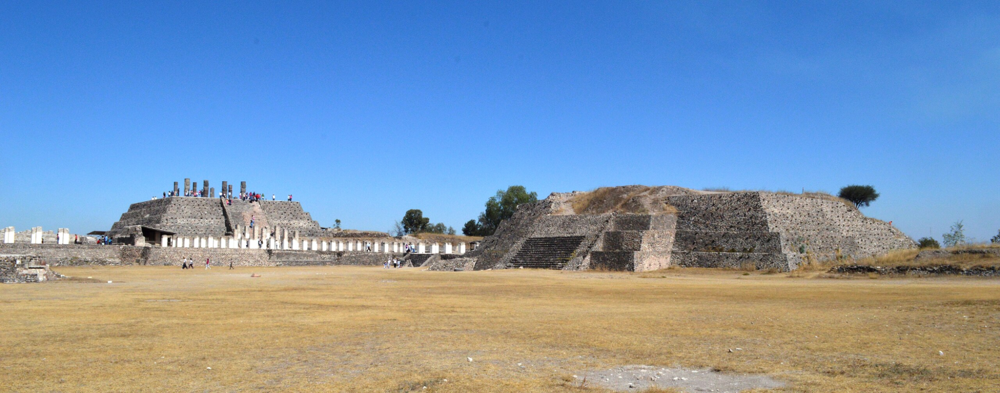
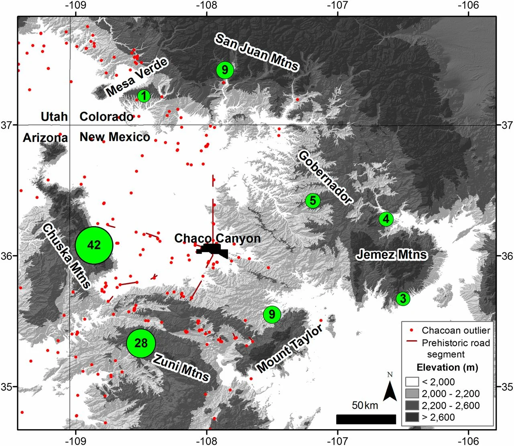

Chaco sits in a remote canyon in northern New Mexico. Currently a National Park and a UNESCO World Heritage site, it hosts some of the most spectacular archeological sites in North America. Built by ancestral Pueblo peoples, Chaco flourished between 900 and 1100 CE, when it saw the construction of its famous great houses, become the center of the four corners region and traded with Mesoamerican states. Its civilization saw a sharp decline after 1150 and Chaco Canyon was fully abandoned by 1250.Many modern pueblo peoples, including Hopi, Zuni and others, connect their heritage with Chaco.
Archeological excavations in the canyon and its surroundings started in 1896 and continue to this day. Recent research applying state-of-the art techniques have provided further insights into the Chacoan society.
Can you imagine what Chaco Canyon and its great houses looked like at their prime?
The Canyon
{kind=link}
For millions of years, the erosion of the Chaco wash created a broad canyon that cuts through walls of sandstone, with a flat valley bottom flanked by flat arid mesas on each side.
A populous valley
Despite its remote location in the middle of an arid environment, with limited access to water, crops, hunting and timber, Chaco was a busy place, with 12 great houses and hundreds of smaller buildings. Experts estimate a population of around 2,500 people living in the canyon at its peak.
{kind=link}
“Downtown” Chaco
{kind=link}
The central part of the canyon hosted the largest and most important great houses. It’s what archeologists call Downtown Chaco.
Chacoans built most of their constructions in the sides of the canyon, especially in the North bank, near the cliff walls and away from potential wash flooding. There is also evidence of irrigation farming in the valley floor, with distribution channels and regular sized plots.
The Great Houses
Chaco great houses represent the most complex architecture in pre-columbian North America, with several floors, delicate masonry work, and hundreds of rooms. Downtown Chaco contains the three most prominent great houses: Pueblo Bonito, Chetro Ketl and Pueblo Alto.
Pueblo Bonito
{kind=link}
Pueblo Bonito (The Beautiful Town in Spanish) was the oldest and most important of the great houses. It probably had more than 650 rooms, more than 30 kivas (rounded rooms, often underground) and reached up to 4 or 5 floors in height. It forms a horseshoe shape with a big plaza divided in two, with a great kiva in the middle. Excavations during the early 1900 produced many artifacts, some of which will be discussed later.
Pueblo Bonito's position also shows precise astronomical orientations, notably its main front wall aligned east-west with the equinox sun, and a central wall running north-south, marking the sun's daily passage. Many other chacoan constructions show astronomical alignments, demonstrating their knowledge of solar and lunar cycles and their importance in their cosmology
A mythical tree?
In many older reconstructions you will find a large ponderosa pine in the plaza, based on the finding of a large log during early excavations. The idea of a large tree growing in such an arid environment led to all kinds of mythical interpretations. However, recent research on the remains has shown that the tree didn’t grow in situ, and instead was brought in from the Chuska mountains, 30 miles to the East. It probably served more mundane purposes.
Chetro Ketl
Chetro Ketl sits nearby, less than half a mile to the East of Pueblo Bonito. Although significantly smaller than Pueblo Bonito by number of rooms, it is the largest great house by surface, with a great plaza in the middle with two great kivas. The name Chetro Ketl seems to be a corruption of Navajo words, but its original meaning has been lost to time.
{kind=link}
{kind=link}
Chetro Ketl shows a very unique feature, seen nowhere else in the prehistoric Southwest: a wide colonnade in the façade of its main building block. However, colonnades like this were a common feature in coetaneous mesoamerican buildings, especially in the most powerful city of this era: Tula, the capital of the Toltecs. This could indicate contacts between the two. We’ll examine these contacts more in depth in a section below.
Vast colonnades in Tula, Mexico, built between 900 and 1150 CE
Painted façades
The white and red painting of the façade shown in this reconstruction is speculation. Most of the original plaster of Chetro Ketl has been lost to the elements and walls were usually covered in brown mud plaster. However, there are some walls in Chaco and in other related sites like, Aztec ruins, Mesa Verde and Canyon de Chelly (picture on the right), where white plaster with color motifs are still preserved. Maybe that technique was also used for some of the façades in Chaco. It’s fun to image what a great house could be like with a more colorful look!
Chacoan Architecture
Great houses were built using very specific techniques and elements, like multi-story masonry roomblocks and semi-subterranean round rooms. Let’s take a more detailed look at their architecture.
Room blocks
{kind=link}
Room blocks were built by aggregating rectangular rooms with walls built of fine sandstone masonry and covered in mud plaster. Great house room blocks were multi-storied, in some cases reaching up to 4 or 5 floors! Upper story floors and exterior roofs were built on top of primary timber beams, which held secondary beams and layers of clay, mortar and sand to create a floor. Doors and vents had lintels built with smaller poles. Some doors have an interesting T shape, characteristic to the Southwest and of unknown meaning.
While most rooms where covered in mud plaster, some rooms were finished with a fine layer of white lime and sometimes featured painted decorations with vivid motifs in blue, red, and orange. If you visit Chetro Ketl, you can still identify a plastered room with a blue and orange squared ribbon, similar to the one illustrated in the diagram
Chacoan doors
Chacoans didn't have wooden doors with rods or hinges. Instead, doors could be closed with reed mats or blankets. There are some examples that have been preserved in situ, for example this reed curtain found at Aztec Ruins National Monument, a late Chaco-style great house in Northen New Mexico.
Round rooms: Kivas
{kind=link}
One of the most characteristic elements of Chaco and its surrounding region is the presence of round rooms. Archaeologists call them kivas, a word in the Hopi language, borrowing the term from similar ceremonial structures in current Pueblo cultures. However, archaeological evidence indicates that the kivas at Chaco were used primarily for domestic activities.
Kivas probably evolved from pithouses dug in the ground, common in previous periods. Many Chacoan kivas were dug underground, but there were also kivas built above ground, embedded in building units. Access to the kiva was possible through a small hatch opened in the roof with a ladder. Kivas have a hearth in the middle that uses the hatch as a sort of chimney, a masonry bench around the base of the wall, and a shaft dug on the side for ventilation.
Kiva murals
Some kivas feature murals with geometric and figurative designs. Unfortunately, most of these designs have weathered away or survive only in poor condition. A notable exception was Lowry Pueblo, a community near Cortez in Southwest Colorado. This site includes a Chaco-style great house and two kivas decorated with geometric patterns found very well preserved. Regrettably, efforts to preserve the mural in place failed and only a few fragments are now preserved in the Canyons of the Ancients Museum in Dolores, Colorado.
{kind=link}
On the inside, kivas often had a domed roof. The dome could be created using curved beams and plastered wainscotting, like the reconstruction above, or by approximation of rows of logs that created a cribbed structure, like the one here. The top of the dome was filled with soil to create a flat roof, usually leveled with their surrounding elements.
Great Kivas

Great kivas are also semi-subterranean circular rooms, but much larger in space than domestic kivas. Some reached a diameter of over 60 feet and could host hundreds of people! Most archaeologists agree that great kivas were not living quarters, but instead public buildings built for group gatherings of ceremonial and/or political nature like banquets, religious rituals and dances.
Some great kivas were associated with great houses. Pueblo Bonito and Chetro Ketl had two great kivas within their enclosure, for example. However, others, like Casa Rinconada, were not associated with a great house and seem to have served communities of smaller settlements.
Great kivas show some of the most complex architecture in the Chacoan world. A flat, intricate roof standing on four pillars covered these rooms, and a masonry bench ran around the base of the wall. A set of niches were excavated in the walls, above the bench. They often included two covered vaults in the floor of unclear purpose, although many archeologists think that these vaults were used as “foot drums” for ceremonial dances.
The core of a region
The sphere of influence of Chaco extended well beyond the limits of the canyon. Archaeologists have identified hundreds of other contemporaneous great houses built in Chacoan style in a wide region that extends, approximately, from San Juan mountains in the North, to Zuni in the South, and from the western slopes of the Chuska mountains to the Jemez mountains in the East. These “outlier” great houses, as they are often referred to in literature, exhibit a series of features that associate them with Chaco, including monumental masonry in Chacoan style, multi-story roomblocks, great kivas, and distinctive styles of ceramics and other goods that do not exist in other regions. These outlier great houses likely functioned as regional hubs that projected Chacoan influence into a broader region. The greater Chaco region encompassed around 40,000 square-miles, similar in size to some American states.
Locations of Chaco and post-Chaco-era great houses and great kivas within the Chaco World, by Catherine Gilman from Evaluating Chaco migration scenarios using dynamic social network analysis. (2018).
All Roads Lead to Chaco
Chaco was also at the center of a large system of monumental roads, up to 9 meters wide, that connected different great houses and landscape features, represented as dotted lines in the map above. Using modern technologies like LIDAR, archeologists have tracked this road network into distant parts of the region. Some of them are over 30 miles long, and run in a straight line for miles, an engineering feat for their time!
Adjacent to the roads, and in privileged vantage points, archeologist have found small D-shaped masonery structures, named herraduras (horseshoe in spanish), that could be markers or roadside shrines.
Timber, Food and Pots
It’s not just roads that connect the Chacoan world. Chaco’s arid landscape lacked many staples needed for life in the canyon at this scale. Timber was needed for the beams of the great houses, and to fuel its hearths. Experts estimate that the construction of the Chaco canyon great houses required around 250,000 trees to be logged and transported into the canyon! Pottery is common in the canyon, but most pottery had to be fired in distant kilns where timber was abundant and brought to the canyon. And Chaco’s residents had to be fed even though local production of corn and meat was most likely insufficient to feed all residents of the canyon.
Sources of sampled timbers from Chaco canyon, from Eleventh-century shift in timber procurement areas for the great houses of Chaco Canyon (2015)”
Modern analysis, using techniques like dendroprovenance of timbers and isotopic analysis of corn cobs and animal bones have shown that these staples were brought to the canyon from distant areas. Many came from the Chuska mountains, over 35 miles to the East, a region with dense forest and more apt for agriculture. But also from other regions like the San Juan Basin and Zuni mountains. Interestingly, this flow of goods was unidirectional, that is, a lot flew into Chaco, but almost nothing was “exported” from the canyon.
How were objects carried?
Given the lack of wheel, carts or pack animals, these goods had to be carried by human porters, maybe using trumplines as portrayed in some Southwestern pottery. Chacoan roads were probably filled with porters carrying grain, timber and other goods, coming and going to Chaco from distant parts of its sphere of influence.
A hierarchical society
Current pueblo societies, descendants from Chaco culture, tend to be egalitarian. Initial researchers working on Chaco thought that Chacoans, by extension, would also be an egalitarian society. However, current research points otherwise, towards a hierarchical structure with leaders and commoners.
Great Houses and Common Houses
Most of the population in the Chaco world lived in small homes, with 3-5 rooms and a small kiva. Great houses were an exception, not the norm.
Although great houses were large in size, most experts agree that not many people lived in them. Most rooms were for storage, and only a few could accommodate inhabitants (e.g. they had a hearth). With that in mind, most experts see great houses as places of power, (political and/ or spiritual), rather than populous villages.
Elite imports
Besides differences in size, great house excavations have also produced a number of luxury goods that are absent from common homes. Many of these luxury items were brought in from large distances, like shell bracelets from the Pacific Coast, and macaw feathers, copper bells and cacao beans that were sourced from Mesoamerica. The presence of these luxury goods does not only show that Chaco was part of a broader trade network with other Mesoamerican states, it also shows that great houses monopolized access to those items.
This is evidence that residents of great houses were not common people, they were elites and liked to show off their status.
The “Bonito Dynasty”
As the largest great house, it is no surprise that many luxury items have been unearthed from Pueblo Bonito. And in one room in particular, room 33, deep into the oldest part of the roomblock, is where the most spectacular items have been found. Room 33 was a burial chamber, and contained the skeletons of 14 individuals, some of them surrounded by turquoise, shells and other precious items. Recently, DNA tests and other analysis of these burials determined that these individuals were all part of a single family and related by matrilinear descent. The oldest burials have been dated in the late eighth or mid-ninth centuries A.D. The burial crypt continued to be used over the next few centuries for the same family.

Furthermore, isotope analysis has shown that these individuals had higher protein intake in their diets than the other coetaneous individuals in the Southwest. Great houses were not just large in size, they seem to have hosted noble “great houses”, who ate well and lived surrounded by luxury. Maybe not that different from those great houses you see in Game of Thrones :)
So, what was Chaco?
Although we don’t have written records from the Chacoan world, and the tourism industry likes to present Chaco as “the great mystery of the southwest”, modern archeological research is starting to fill a complex puzzle. Chaco seems to be the center of a broad region, with ties to post-classical Mesoamerica, which formed a hierarchical society ruled by noble families that inhabited the great houses of the canyon.
Was the source of their power political, military or religious (and was there even a difference)? Was there a sole ruler, or a series of ruling families that governed together? Some researchers, especially Steve Lekson, see the mesoamerican structure of the atepetl as a good reference for what Chaco was. Atepetls were the city-states of the mexica and other mesoamerican groups, with governance over a larger region and in some cases with 4-6 noble families as rulers. Others see a more distributed and softer power structure with religion and rituals as the cohesive identity element.
And there is a lot more that we don’t fully understand. Why did Chacoanes establish their center of power in Chaco and not somewhere else with more resources? What exact role played the outlier great houses in their economy and power structures? Was Chaco ruling over those outlier great houses in the form of tribute, for example, or was it a softer association, like shared rituals and pilgrimages?
Chacoan research is indeed an interesting discipline, but definitely not a mystery!
A Landscape at Risk
Researchers are working on those questions, and future investigation and excavations may yield their answers. However, the Chaco landscape, the ruins of their great houses, and features like its roads, are in a delicate balance. Besides archeological finds and the heritage of Pueblo cultures, the Chaco region produces oil and gas. Although the canyon itself is protected as a National Park, its immediate surroundings are at risk. Organizations like Archeology southwest, Crow Canyon Archeological Center, and many native american nations continue their efforts to ensure proper respect for this special landscape. Consider supporting and donating to these organizations to help preserver Chaco for future generations.